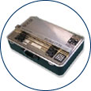

Index
- Description
- Points to ponder
- Embossers
- Braille Translation Software
- Miscellaneous Braille Computer Based Programs
This list of products is for reference purposes only and does not reflect endorsement by the IDRC.
Description
A Braille Embosser is a hardware device for "printing" a hard copy of a text document in Braille. A Braille translation software program is required to translate the text from the computer into Braille. Most Braille translation software programs can translate material into several grades or versions of Braille. There is also a new Music Braille software program as well as scanning software to scan Braille into a computer and have it displayed or translated into text.
Points to ponder - Questions to consider when shopping for a Braille embosser
- Is it compatible with your computer's platform?
- How does it connect to your computer?
- What is its embossing speed (measured in characters per second, or CPS)?
- Is the height of the characters adjustable?
- Is it stationary or portable?
- How loud is it? Do you need a soundproof case?
- Does it print single-sided or double-sided?
- Does it allow you to work in both print and Braille?
Embossers
- Enabling Technologies manufacture the following Braille Embossers:
- Romeo 25 - 40 characters of Standard Braille per line, 25 characters per second, ET Speech and single sheet tractors are no longer available on the Romeo 25
- Romeo Pro 50 - 50 characters per second, includes ET Speech, single sheet tractors
- Thomas - single side Braille embossing, 40 characters per second
- Juliet Classic - double sided printing, up to 55 characters per second, extra wide Braille line [up to 56 characters per line]
- Juliet Pro - comes with ET Speech and single sheet tractors, up to 55 characters per second, extra wide Braille line [up to 56 characters per line]
- Juliet Pro 60 - 40 characters per line, 60 characters per second
- Freedom Scientific offers the Braille Blazer and VersPoint Duo Braille Embosser along with a variety of accessories for use with computers and their line of Notetakers
- The Mountbatten Brailler is available from Quantum Technologies
- Sighted Electronics, Inc. , Email: This email address is being protected from spambots. You need JavaScript enabled to view it.
- Index Braille whose primary focus is industrial Braille Embossing machines, do have a few "personal" models and the WinBraille translation software [see Braille Translation software below] (to access the websites for all Index Braille products you must follow the links from their homepage & for Embossers click on the 'Embosser Products' link)
- Everest - industrial Braille embosser double sided Braille printer for cut sheet paper.
- Index 4x4 Pro - another industrial Braille embosser
- Basic S/D [more personal size embosser] - high speed double sided embossing in a smaller size
- View Plus Technologies Inc - manufacturers of: TigeR Braille Embosser Series and Emprint TM the full colour Braille printer.
Braille Translation Software
- Duxbury Braille Translation software from Duxbury
- also from Duxbury is MegaDots Braille Translation for DOS
- Duxbury Braille Board for easy translation and making of signs
- TGD Pro (Tactile Graphics Designer) Pro
- A few Braille freeware downloads
- BRLTTY - Access Software for Unix for a Blind Person Using a Soft Braille Terminal
- provides access to the Linux console
- WinBraille Braille editor based on Windows drivers - comes with the Basic S Embosser but will work with all modern Index Embossers (to access the websites for all Index Braille products you must follow the links from their homepage & for WinBraille click on the 'software products' link)
Miscellaneous Braille Computer Based Products
- Enabling Technologies "TransSend" puts Braille and print together on the same page
- GOODFEEL Braille Music program from Dancing Dots who also make:
- CakeTalking a CakeTalk tutorial with scripts for JAWS for Windows to be used with the CakeWalk application
- Tack-Tiles - English, French, German, Italian and Spanish literary Braille code, and Music, Nemeth math and Computer Braille code sets are available
- Repro-Tronics Inc. (rti)
- Tactile Image Embosser - use photocopier or China marker and then one-pass through the embosser produces tactile images
- Total Graphics Solution - integrated system of hardware and software for design and output of audio-tactile graphics
- Hungry Fingers - An educational tool for explaining the relation between 3 dimensional models and 2 dimensional drawings. Easily transforms models of different objects into tactile outlines, helping a blind learner understand what happen when a 3 dimensional object is represented as graphics on a flat sheet of paper."